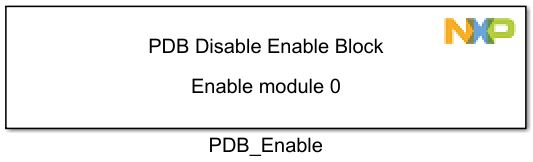
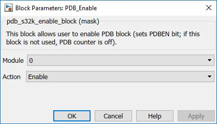

Programmable Delay Block - Enable
This block is used to enable the PDB at a certain time. If you want it to be enabled in the initalization function called once, at the beginning, enable the checkbox from the Config block.
Block Image
Inputs:
- None
Outputs:
- None
Parameters and Dialog Box
The block dialog consists of the following tabs:
PDB Enable - configuration options
The PDB Enable block contains the following parameters:
PDB Module
Selects which PDB module to enable.
Block Dependency
- Use PDB_Config Block to configure PDB
Block Miscellaneous Details:
- None